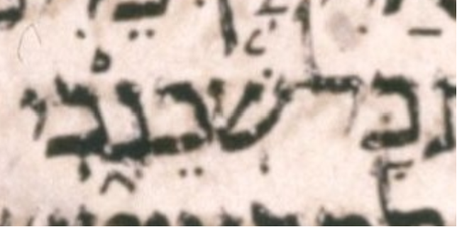

| bcv (link to tanach.us) | 2k4:3 |
| MPK | שְׁכֵנָ֑כִי |
| qere-context | כָּל־שְׁכֵנָ֑יִךְ |
| qere | שְׁכֵנָ֑יִךְ |
| at issue | ךְ |
| at issue English | added a sheva to kaf sofit |
| folio col line | 204A 3 20 |
The MPK’s yod does not carry a sheva for the qere’s ך, perhaps because that would be illegal.